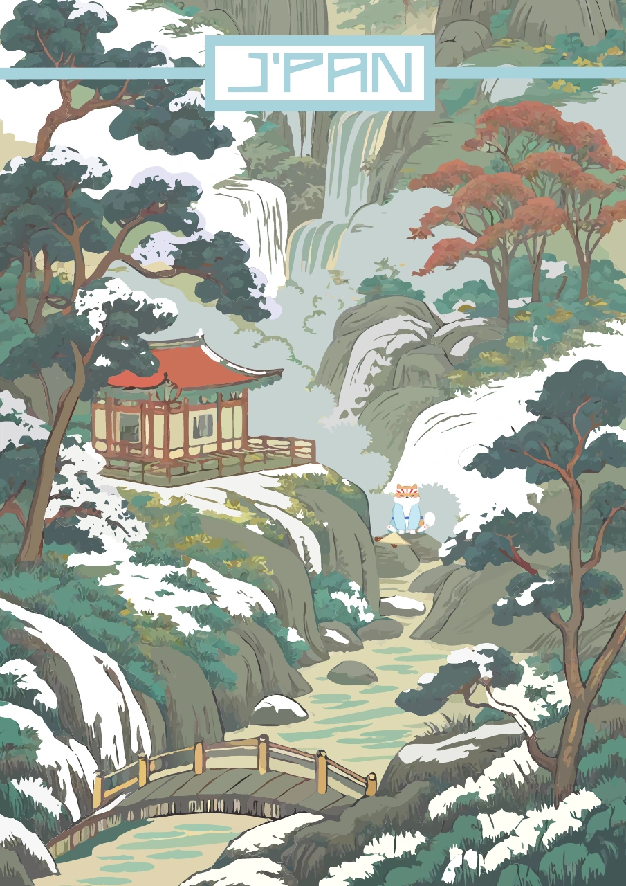
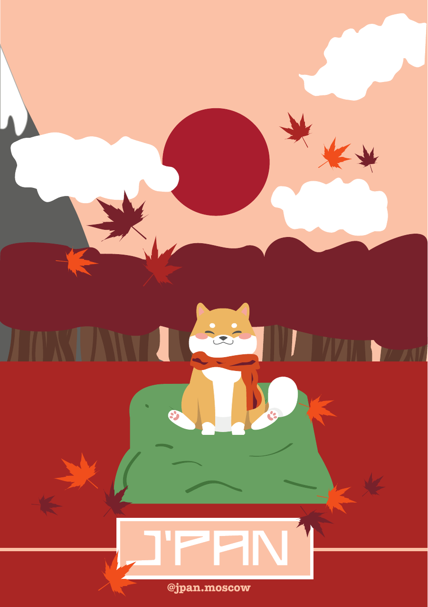

Сезонные меню
Обложки для сезонных и праздничных меню J’PAN. В основе иллюстраций — истории с маскотом ресторана, сиба-ину.
- Клиент
- J’PAN
- Моя работа
- Иллюстрации обложек и подготовка к печати
- Носитель
- Печатное меню
Зима 2025


Меню в публикации J’PAN

Ханами · Весна


Лето


Хэллоуин


Спешл зима 2024


Весна


Зима 2023


Первое меню J’PAN
Для первого осеннего меню предложил связать лицевую и оборотную стороны одним сюжетом. Сначала сиба-ину наслаждается пикником в кленовом лесу, затем наблюдает за закатом. Осенние клёны отсылают к момидзи. Предложенный мной формат истории на двух сторонах обложки ресторан сохранил и в последующих меню.
